Model Interpretation and Feature Selection
10/28/2022
Robert Utterback (based on slides by Andreas Muller)
Model Interpretation (post-hoc?)
NOT causal inference
- Does x cause y?
- That's NOT what model interpretation is giving us!
- Don't want to get too into 'causal inference', but just be careful
- Can still inform how to better model the data or do better exploration
Types of explanations
Explain model globally
- How does the output depend on the input? Often: some form of 'marginals'
Explain model locally
- Why does it classify this point this way?
- Explanation could look like a 'global' one but be different for each point
- "What is the minimum change to classify it differently?"
Explaining the model \(\ne\) explaining the data
- model inspection only tells you about the model
- the model might not accurately reflect the data
"Features important to the model"?
Naive:
coef_for linear modelsfeature_importances_for tree-based models
Linear Model coefficients
- Relative importance only meaningful after scaling
- Correlation among features might make coefficients completely uninterpretable
- L1 regularization will pick one at random from a correlated group
- Any penalty will invalidate usual interpretation of linear coefficients
Drop Feature Importance
\[ I^{drop}_i = Acc(f,X,y) - Acc(f',X_{-i},y) \]
def drop_feature_importance(est, X, y):
base_score = np.mean(cross_val_score(est, X, y))
scores = []
for feature in range(X.shape[1]):
mask = np.ones(X.shape[1], 'bool')
mask[feature] = False
X_new = X[:, mask]
this_score = np.mean(cross_val_score(est, X_new, y))
scores.append(base_score - this_score)
return np.array(scores)
- Doesn't really explain model (refits for each features
- Can't deal with correlated features well
- Very slow
- Can be used for feature selection
Permutation Importance
Idea: measure marginal influence of one feature \[ I^{perm}_i = Acc(f,X,y) - E_{x_i}[Acc(f(x_i,X_{-i}),y)] \]
def permutation_importance(est, X, y, n_repeat=100):
baseline_score = estimator.score(X, y)
for f_idx in range(X.shape[1]):
for repeat in range(n_repeat):
X_new = X.copy()
X_new[:, f_idx] = np.random.shuffle(X[:, f_idx])
feature_score = estimator.score(X_new, y)
scores[f_idx, repeat] = baseline_score - feature_score
- Applied on a validation set given trained estimator.
- Also kind of slow.
LIME
- Build sparse linear local model around each data point
- Explain prediction for each point locally
- Paper: "Why Should I Trust Y ou" explaining the predictions of any classifier
- Implementation: https://github.com/marcotcr/lime
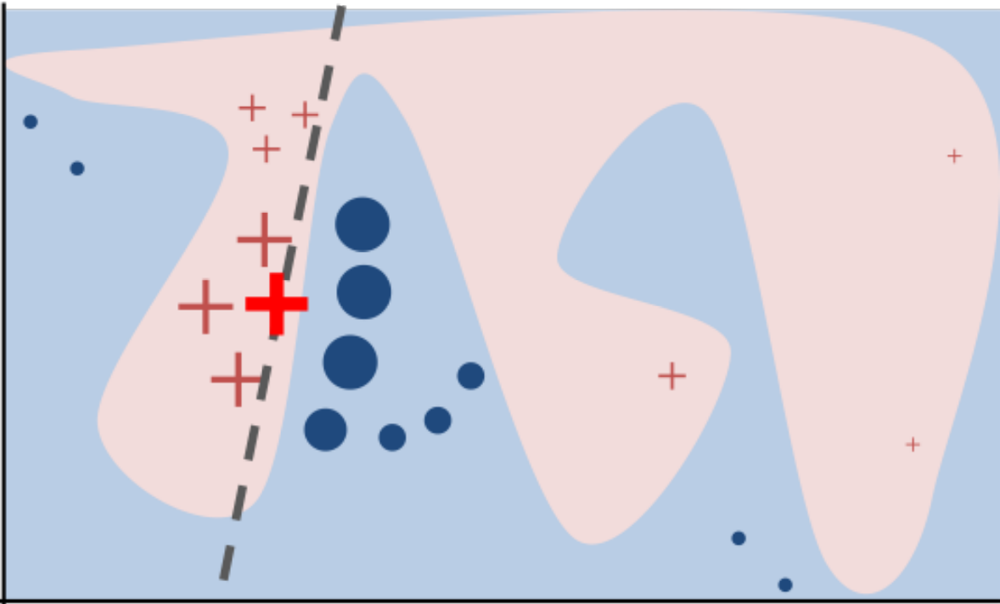
SHAP
- Build around idea of Shapley values
- Roughly: does drop-out importance for every subset of features
- Intractable, requires sample approximations
- Fast variants for linear and tree-based models
- Cool visualizations and tools: https://github.com/slundberg/shap
- Can give local and global explanations
Case Study
Toy Data
100,000 points, 8 features

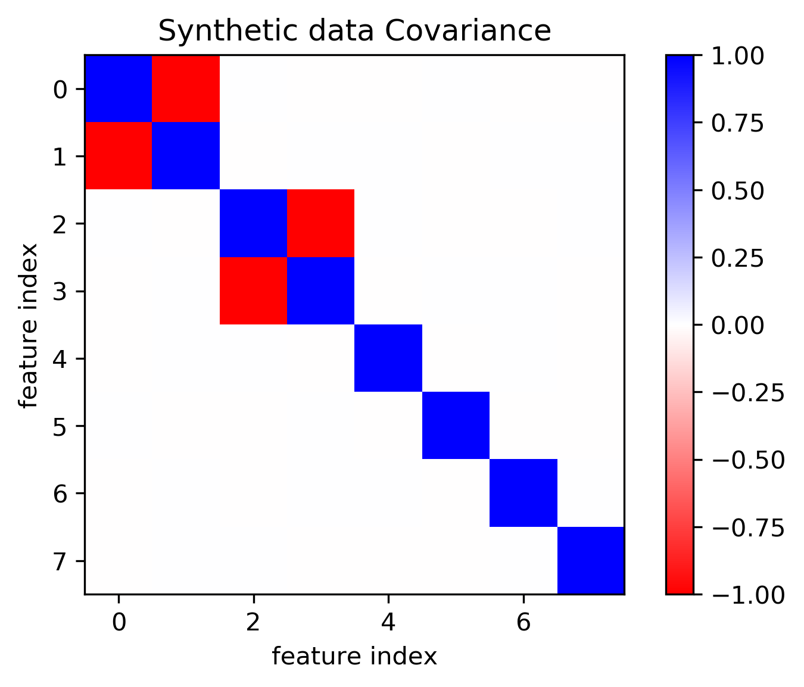
Models on lots of data
lasso = LassoCV().fit(X_train, y_train)
lasso.score(X_test, y_test)
0.545
ridge = RidgeCV().fit(X_train, y_train)
ridge.score(X_test, y_test)
0.545
lr = LinearRegression().fit(X_train, y_train)
lr.score(X_test, y_test)
0.545
param_grid = {'max_leaf_nodes': range(5, 40, 5)}
grid = GridSearchCV(DecisionTreeRegressor(), param_grid, cv=10, n_jobs=3)
grid.fit(X_train, y_train)
grid.score(X_test, y_test)
0.545
rf = RandomForestRegressor(min_samples_leaf=5).fit(X_train, y_train)
rf.score(X_test, y_test)
0.542
Coefficients and default feature importance
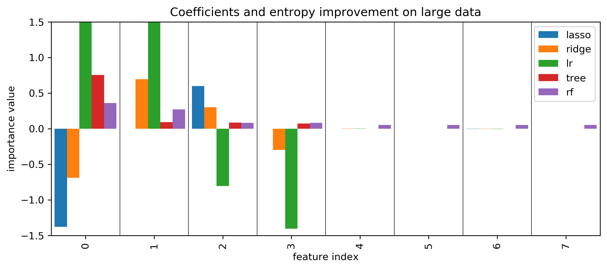
Permutation Importances
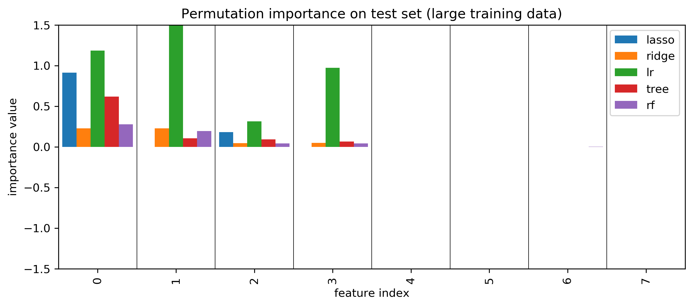
SHAP values
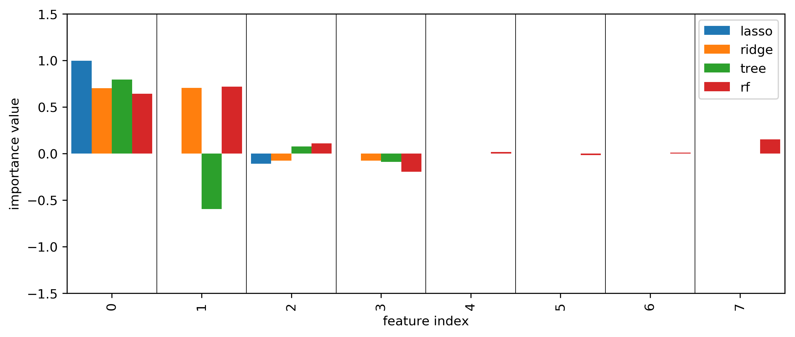
More model inspection
- Kind of coarse-grained: just tells you how important
- How about telling us exactly how a feature interacts with a given model/prediction
Partial Dependence plots
- Marginal dependence of prediction on one (or two) features \[ f^{pdp}_i(x_i) = E_{X_{-i}}[f(x_i,x_{-i})] \]
- Idea: get marginal predictions given feature
- How? "integrate out" other features using validation data
- Fast methods available for tree-based models (doesn't require validation data)
Partial Dependence
from sklearn.ensemble.partial_dependence import plot_partial_dependence
boston = load_boston()
X_train, X_test, y_train, y_test = \
train_test_split(boston.data, boston.target,
random_state=0)
gbrt = GradientBoostingRegressor().fit(X_train, y_train)
fig, axs = \
plot_partial_dependence(gbrt, X_train,
np.argsort(gbrt.feature_importances_)[-6:],
feature_names=boston.feature_names, n_jobs=3,
grid_resolution=50)
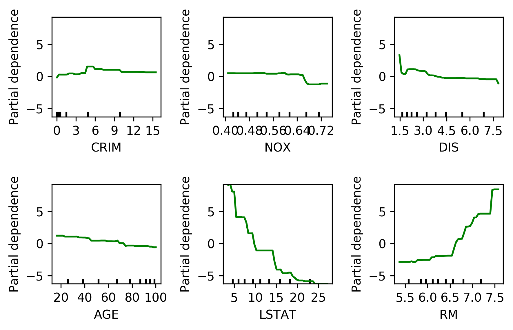
Bivariate Partial Dependence Plots
plot_partial_dependence(
gbrt, X_train, [np.argsort(gbrt.feature_importances_)[-2:]],
feature_names=boston.feature_names,
n_jobs=3, grid_resolution=50)
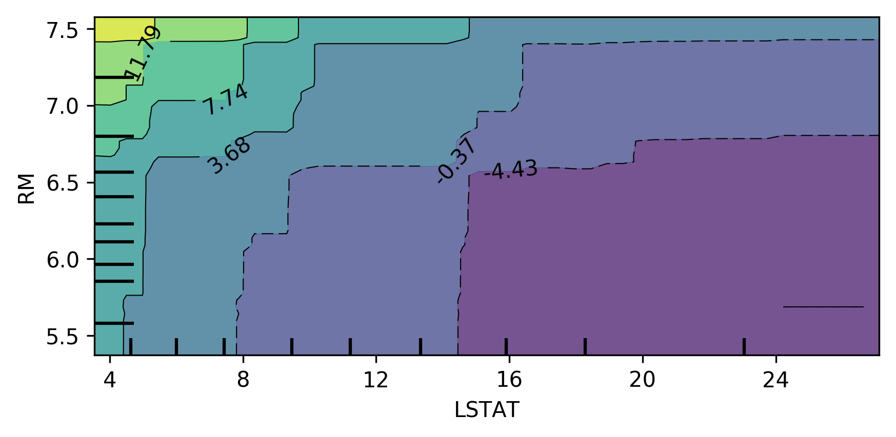
Partial Dependence for Classification
from sklearn.ensemble.partial_dependence import plot_partial_dependence
for i in range(3):
fig, axs = \
plot_partial_dependence(gbrt, X_train, range(4), n_cols=4,
feature_names=iris.feature_names,
grid_resolution=50, label=i)
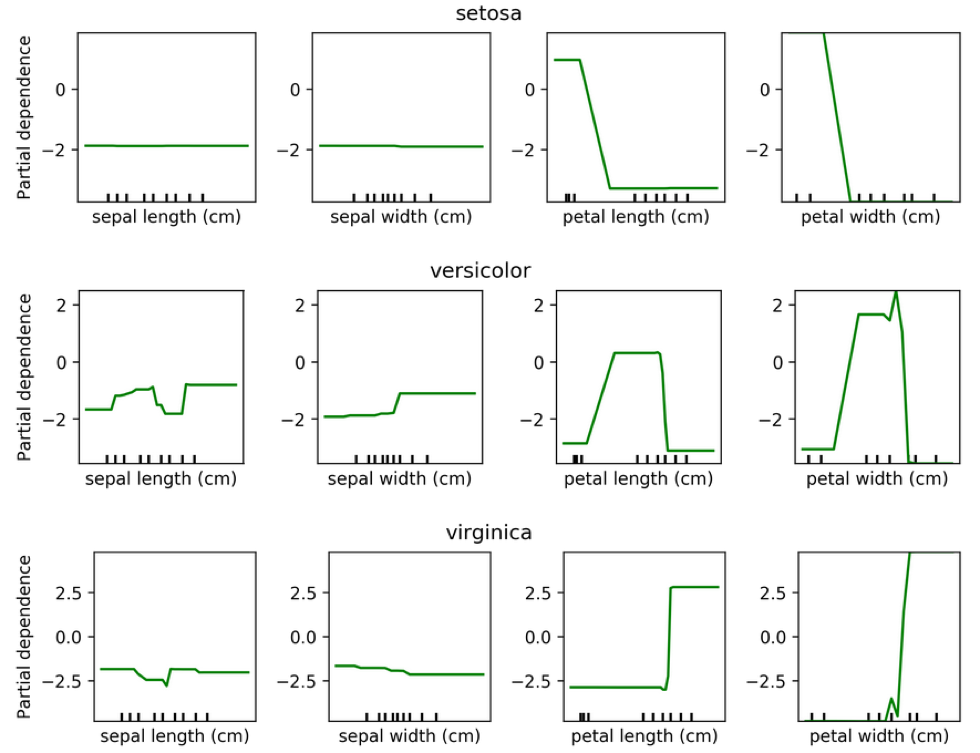
PDP Caveats
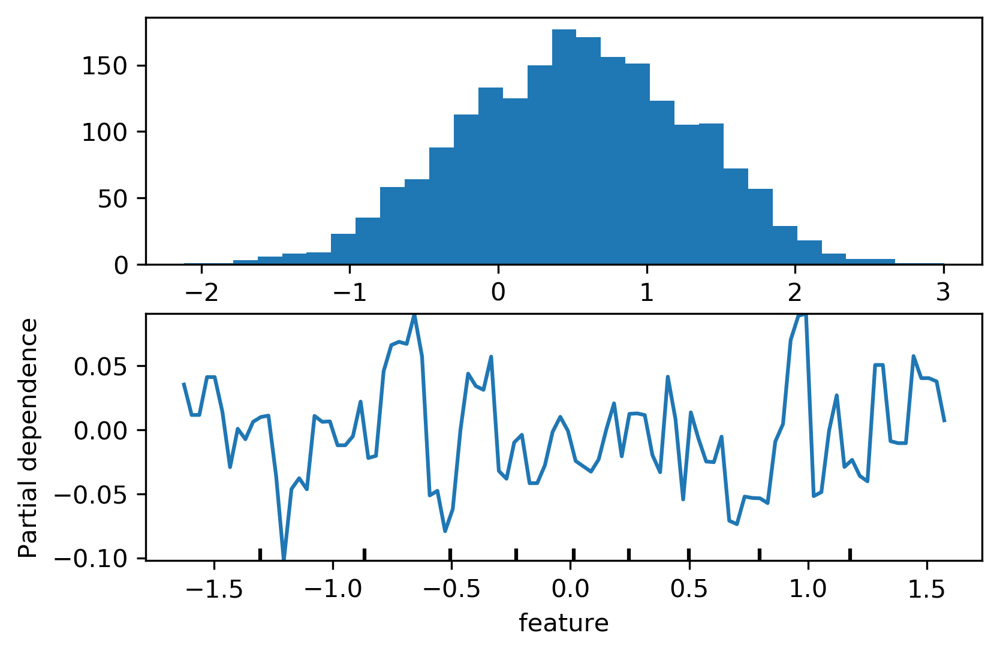
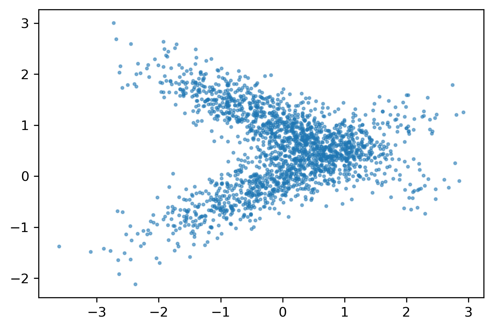
ICE (individual conditional expectation) plots
- Like partial dependence plots, without averaging
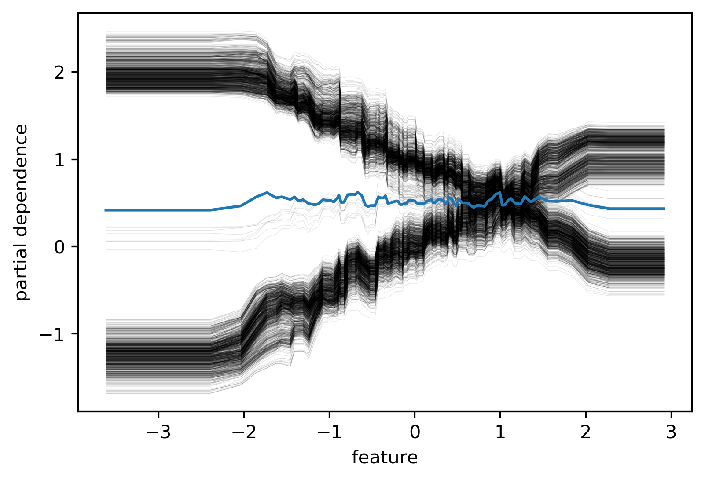
(Automatic) Feature Selection
Why Select Features?
- Avoid overfitting (?)
- Faster prediction and training
- Less storage for model and dataset
- More interpretable model
Types of Feature Selection
- Unsupervised vs Supervised
- Univariate vs Multivariate
- Model based or not
Unsupervised Feature Selection
Unsupervised Feature Selection
- May discard important information
- Variance-based: 0 variance or few unique values
- Covariance-based: remove correlated features
- PCA: remove linear subspaces
Covariance
from sklearn.preprocessing import scale
boston = load_boston()
X, y = boston.data, boston.target
X_train, X_test, y_train, y_test = \
train_test_split(X, y, random_state=0)
X_train_scaled = scale(X_train)
cov = np.cov(X_train_scaled, rowvar=False)
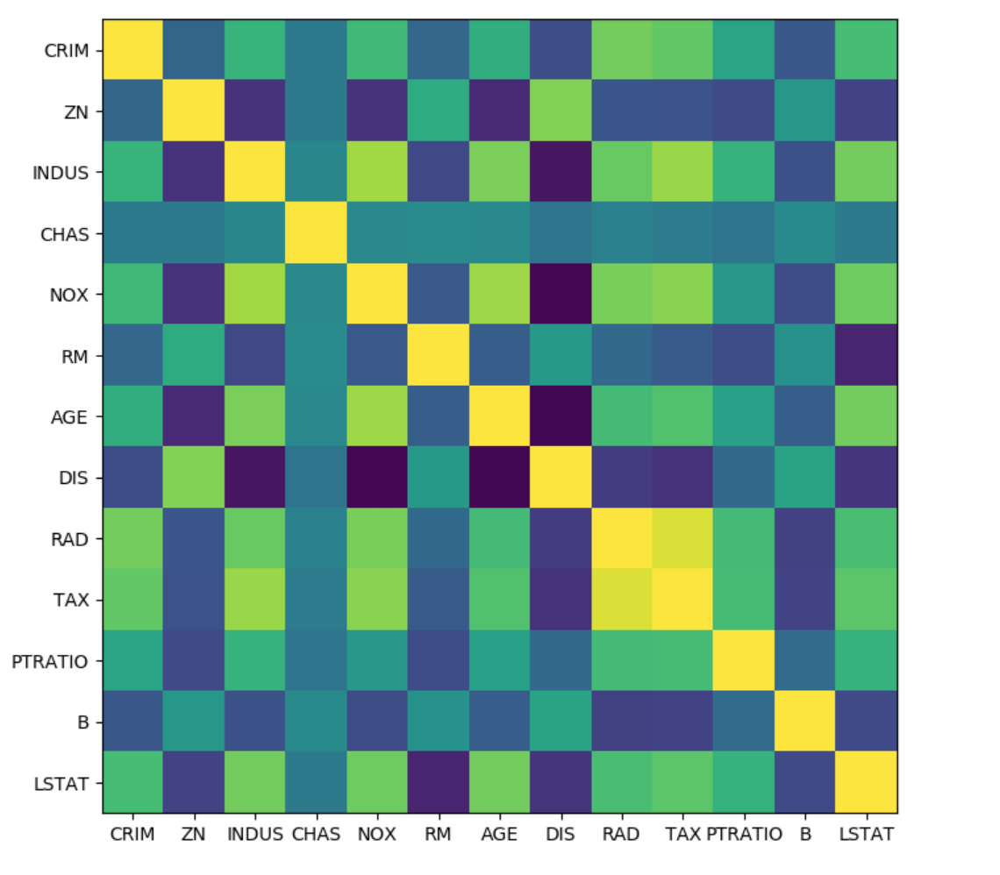
from scipy.cluster import hierarchy
order = np.array(hierarchy.dendrogram(
hierarchy.ward(cov),no_plot=True)['ivl'], dtype="int")
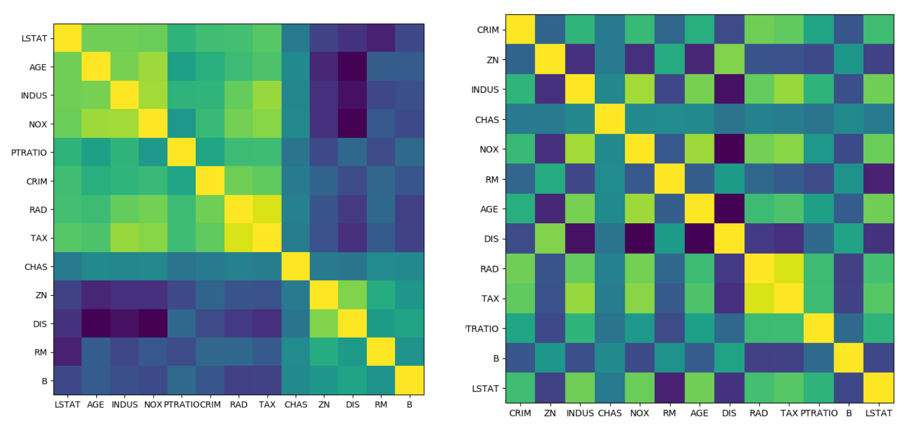
Supervised Feature Selection
Univariate Statistics
- Pick statistic, check p-values !
- f_regression, f_classsif, chi2 in scikit-learn
from sklearn.feature_selection import f_regression
f_values, p_values = f_regression(X, y)
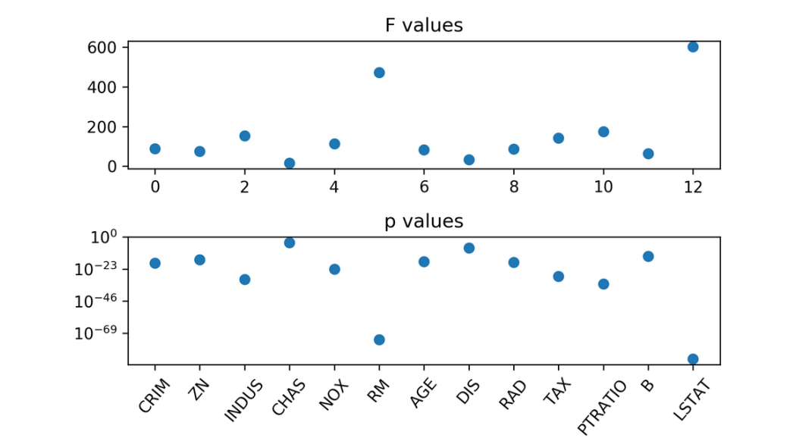
from sklearn.feature_selection import \
SelectKBest, SelectPercentile, SelectFpr
from sklearn.linear_model import RidgeCV
select = SelectKBest(k=2, score_func=f_regression)
select.fit(X_train, y_train)
print(X_train.shape)
print(select.transform(X_train).shape)
(379, 13)
(379, 2)
all_features = make_pipeline(StandardScaler(), RidgeCV())
np.mean(cross_val_score(all_features, X_train, y_train, cv=10))
0.718
select_2 = make_pipeline(StandardScaler(),
SelectKBest(k=2,
score_func=f_regression),
RidgeCV())
np.mean(cross_val_score(select_2, X_train, y_train, cv=10))
0.624
Mutual Information
from sklearn.feature_selection import mutual_info_regression
scores = mutual_info_regression(X_train, y_train,
discrete_features=[3])
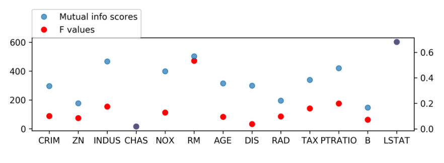
Model-Based Feature Selection
- Get best fit for a particular model
- Ideally: exhaustive search over all possible combinations
- Exhaustive is infeasible (and has multiple testing issues)
- Use heuristics in practice.
Model based (single fit)
- Build a model, select "features important to model"
- Lasso, other linear models, tree-based Models
- Multivariate - linear models assume linear relation
from sklearn.linear_model import LassoCV
X_train_scaled = scale(X_train)
lasso = LassoCV().fit(X_train_scaled, y_train)
print(lasso.coef_)
[-0.881 0.951 -0.082 0.59 -1.69 2.639 -0.146 -2.796 1.695 -1.614 -2.133 0.729 -3.615]
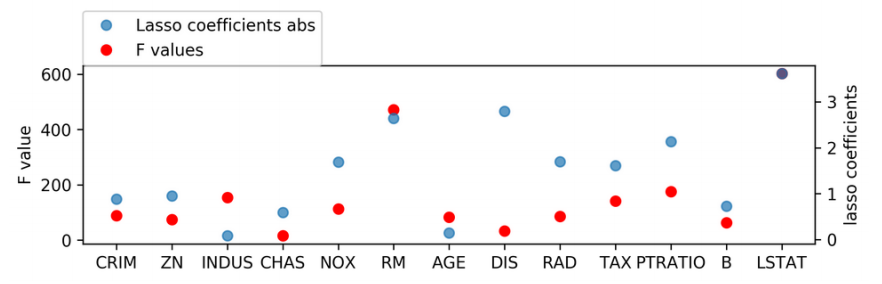
Changing Lasso alpha
from sklearn.linear_model import Lasso
X_train_scaled = scale(X_train)
lasso = Lasso().fit(X_train_scaled, y_train)
print(lasso.coef_)
[-0. 0. -0. 0. -0. 2.529 -0. -0. -0. -0.228 -1.701 0.132 -3.606]
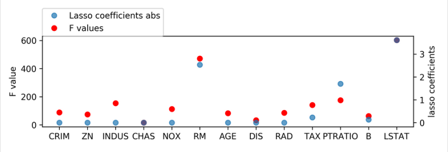
SelectFromModel
from sklearn.feature_selection import SelectFromModel
select_lassocv = SelectFromModel(LassoCV(), threshold=1e-5)
select_lassocv.fit(X_train, y_train)
print(select_lassocv.transform(X_train).shape)
(379,11)
pipe_lassocv = make_pipeline(StandardScaler(),
select_lassocv, RidgeCV())
np.mean(cross_val_score(pipe_lassocv, X_train, y_train, cv=10))
np.mean(cross_val_score(all_features, X_train, y_train, cv=10))
0.717
0.718
# could grid-search alpha in lasso
select_lasso = SelectFromModel(Lasso())
pipe_lasso = make_pipeline(StandardScaler(), select_lasso, RidgeCV())
np.mean(cross_val_score(pipe_lasso, X_train, y_train, cv=10))
0.671
Iterative Model-Based Selection
- Fit model, find least important feature, remove, iterate.
- Or: Start with single feature, find most important feature, add, iterate.
Recursive Feature Elimination
- Uses feature importances / coefficients, similar to “SelectFromModel”
- Iteratively removes features (one by one or in groups)
- Runtime: (n_features - n_feature_to_keep) / stepsize
from sklearn.linear_model import LinearRegression
from sklearn.feature_selection import RFE
# create ranking among all features by selecting only one
rfe = RFE(LinearRegression(), n_features_to_select=1)
rfe.fit(X_train_scaled, y_train)
rfe.ranking_
array([ 9, 8, 13, 11, 5, 2, 12, 4, 7, 6, 3, 10, 1])
RFECV
from sklearn.linear_model import LinearRegression
from sklearn.feature_selection import RFECV
rfe = RFECV(LinearRegression(), cv=10)
rfe.fit(X_train_scaled, y_train)
print(rfe.support_)
print(boston.feature_names[rfe.support_])
[ True True False True True True False True True True True True True]
['CRIM' 'ZN' 'CHAS' 'NOX' 'RM' 'DIS' 'RAD' 'TAX' 'PTRATIO' 'B' 'LSTAT']
pipe_rfe_ridgecv = make_pipeline(StandardScaler(),
RFECV(LinearRegression(),
cv=10),
RidgeCV())
np.mean(cross_val_score(pipe_rfe_ridgecv, X_train, y_train, cv=10))
0.710
pipe_rfe_ridgecv = make_pipeline(StandardScaler(),
RFECV(LinearRegression(),
cv=10),
RidgeCV())
np.mean(cross_val_score(pipe_rfe_ridgecv, X_train, y_train, cv=10))
0.710
from sklearn.preprocessing import PolynomialFeatures
pipe_rfe_ridgecv = make_pipeline(StandardScaler(),
PolynomialFeatures(),
RFECV(LinearRegression(),
cv=10),
RidgeCV())
np.mean(cross_val_score(pipe_rfe_ridgecv, X_train, y_train, cv=10))
0.820
Wrapper methods
- Can be applied for ANY model!
- Shrink / grow feature set by greedy search
- Called Forward or Backward selection
- Run CV / train-val split per feature
- Complexity: n_features * (n_features + 1) / 2
- Implemented in
mlxtend
SequentialFeatureSelector
from mlxtend.feature_selection import \
SequentialFeatureSelector
sfs = SequentialFeatureSelector(LinearRegression(),
forward=False, k_features=7)
sfs.fit(X_train_scaled, y_train)
Features: 7/7
print(sfs.k_feature_idx_)
print(boston.feature_names[np.array(sfs.k_feature_idx_)])
(1, 4, 5, 7, 9, 10, 12)
['ZN' 'NOX' 'RM' 'DIS' 'TAX' 'PTRATIO' 'LSTAT']
sfs.k_score_
0.725